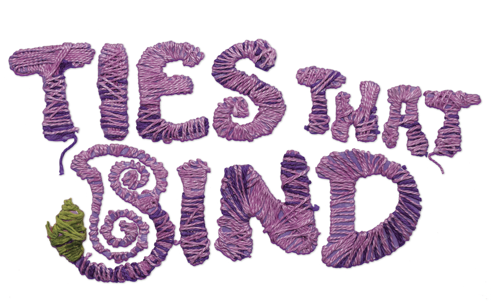
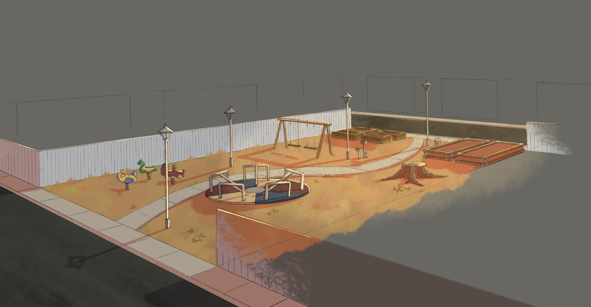
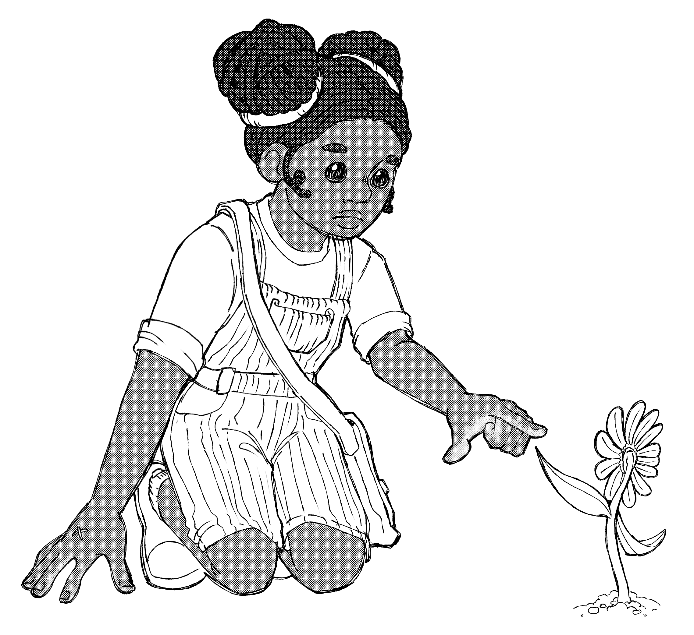
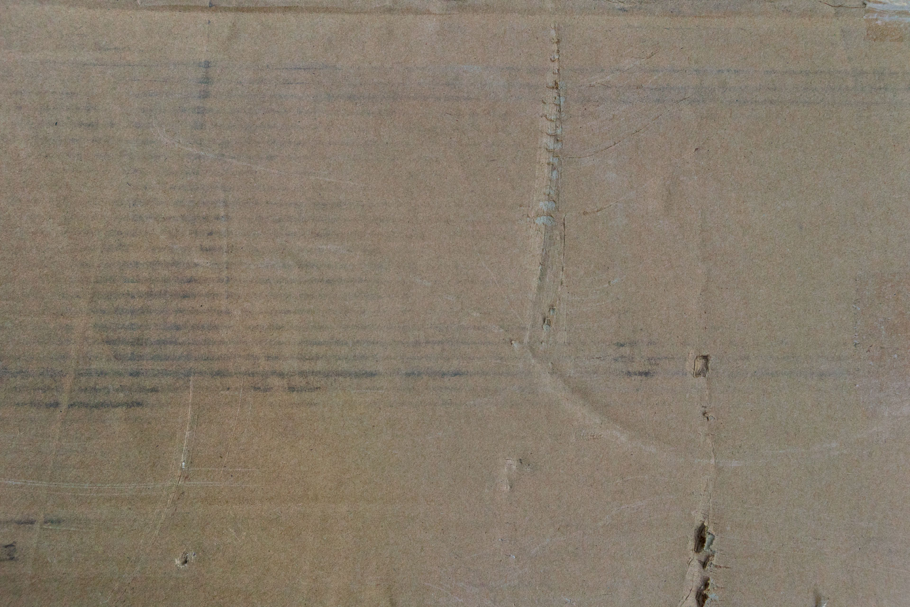
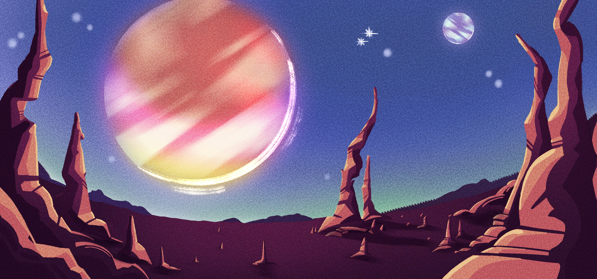

In a world taken over by oppressive stone hands, a young girl and her new-found friend travel to the ends of their universe to take back the world that was once theirs.

It’s as if the 70’s were just getting ready to end when the Hands came in and stuck a 50’s facade over them.

After secretly growing and nurturing the last known flower on Earth, Little Ray, she vows to find a sanctuary where her fragile compassion can grow safely.
Together, they must set off on a perilous journey through abandoned airports, bustling factory districts, and hoards of the strung and controlled.

